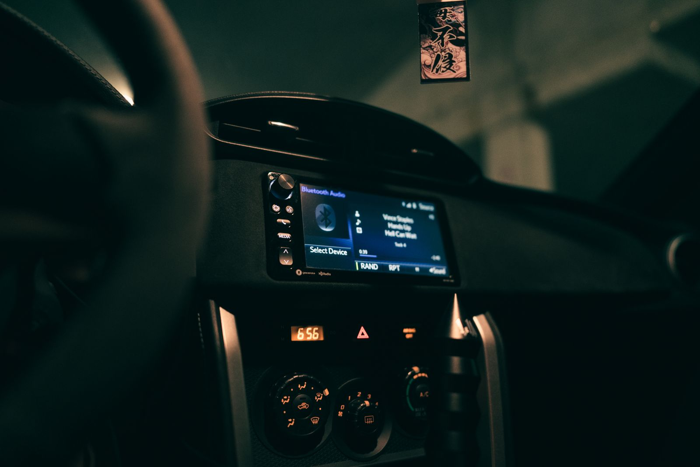
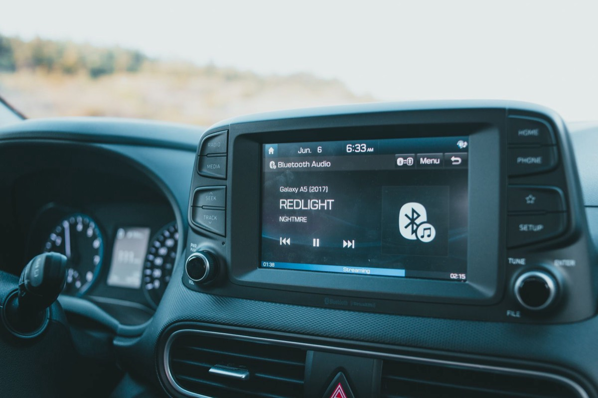
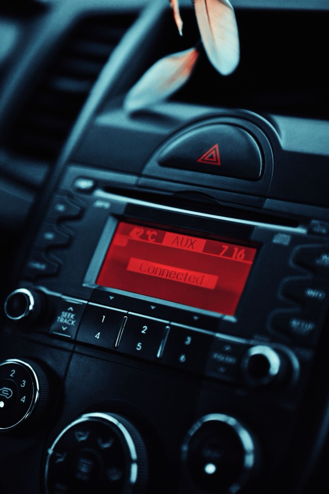

MCEqual Puts a Real Equalizer Back in GM's Google-Built Infotainment
GM vehicles running Android Automotive OS ship with remarkably little tonal control. Bass, mid and treble, and that is roughly the extent of it, on hardware capable of far more. Owners found a workaround — Nissan's Infiniti Sound app, which installed on Google built-in GM vehicles and made a real di
$3.99, one-time, no subscription, rated 4.0 from 49 reviews with 1,000+ downloads, rebuilt as Max 2.0 on 8 November 2026. That is the whole cost of putting real tonal control back into a Google built-in GM vehicle.
GM ships Android Automotive hardware capable of far more than it exposes — bass, mid and treble is roughly the extent of it. Owners had already worked around this once with Nissan’s Infiniti Sound app, then lost it when the app disappeared from the Play Store for GM vehicles.

GM vehicles running Android Automotive OS ship with remarkably little tonal control. Bass, mid and treble, and that is roughly the extent of it, on hardware capable of far more. Owners found a workaround — Nissan’s Infiniti Sound app, which installed on Google built-in GM vehicles and made a real difference — and then lost it when the app disappeared from the Play Store for GM vehicles.
MCEqual is what filled the gap. It is a third-party equalizer from a developer publishing as corelogiclabs, it sells for $3.99 as a one-time purchase, and it was rebuilt as Max 2.0 on 8 November 2026.
Everything below was read off the live Play Store listing on 16 November 2026.
What the listing says
| Price | $3.99, one-time, no subscription |
| Rating | 4.0 stars, 49 reviews |
| Downloads | 1,000+ |
| Updated | 8 November 2026 (Max 2.0) |
| Chart position | #6 top paid, Music & Audio |
| Developer | corelogiclabs |
The rating splits in a way worth noticing. Across all devices it is 4.0 from 49 reviews; the in-car filter — the one that matters here — reads 4.1 from 30 reviews. The car users rate it higher than the phone and TV users do, which is the opposite of what you would expect from an app that started life as a phone equalizer.

What changed in 2.0
The developer describes it as a complete redesign. The additions that matter in a vehicle are:
- EQ inside Android Auto, working with nearly any app, including SiriusXM and iHeartRadio — not just the one or two that expose an audio session
- Synced lyrics, which also work on the radio
- A preset per device, so the truck’s profile does not overwrite the phone’s
- Starts itself when music plays
- Car tuning, 10 new presets, distortion protection and headphone correction
- Bass, Treble, Gain and Balance dials, on top of the band controls
- 24 visualizers, a screensaver, live wallpaper and widgets
- Built-in presets for pop, hip-hop, rap, rock and EDM, with custom presets you can name, plus separate ones for podcasts and movies
Supported sources are Spotify, Amazon Music, Apple Music, Tidal, iHeartRadio, Bluetooth audio and other internet-based media apps.

Three limits, stated by the developer
AM/FM radio is not supported. Broadcast radio does not pass through the audio session the app attaches to. Some SiriusXM content works, but only when it arrives as internet streaming rather than over satellite.
Some presets disappear while the vehicle is moving. Owners have reported this as a bug; the developer answered directly on the listing on 6 October 2026 that it is a Google platform behaviour, not something the app controls: “that is a thing google implemented in the app’s ui, and I don’t have control over it, as it is a safety feature designed to reduce distractions while driving.” Most presets come back when you stop.
Do not run it alongside Infiniti Sound. If the older app is still installed, the two compete for control of the vehicle’s audio processing and can produce errors. Uninstall one before installing the other.
What owners report
The listing shows a handful of reviews rather than a wall of them, and the three visible ones cover the range.
A reviewer posting on 7 November 2026 reports the app working well on Android Automotive, and mentions a trick the listing does not document: pressing seven times on the About section in settings unlocks full editing of custom EQ settings and presets. That is a reviewer’s finding, not a published feature, and it could change in any update.
A second reviewer, on 6 October 2026, calls it “a drastic difference compared to having little to no control in Android Auto” and asks for a quick-settings screen on the main page rather than buried behind a shortcut. That is the same review that raised the disappearing presets.
The one that matters most on this site is from a 2023 Silverado owner, on 15 September 2026, who found the EQ had no effect over Android Auto at all. The developer replied on 5 October 2026 that Android 12 compatibility issues had been fixed and that the app should now work directly on the truck. Whether that resolves it on your specific build is the one thing worth checking before you buy, and it is checkable: the app is a one-time $3.99, and Google’s refund window covers a same-day test.
The price moved
GM Authority reported MCEqual at launch on 1 June 2026 at roughly $3.25. It is $3.99 now. A 74-cent increase is not a story, but it does mean any older write-up you find quoting a lower figure is describing the June build, not the one on sale — and the June build is not the one with Android Auto EQ in it. Max 2.0, the version that added that, landed on 8 November 2026.
Whether it is worth $3.99
If your truck has Google built-in and you have been living with a three-slider EQ, this is the cheapest audio change available to you by a wide margin. A speaker upgrade runs into four figures installed; a powered subwoofer is several hundred before wiring. Four dollars for band-level control over the signal feeding the factory amp is not a comparable purchase.
The honest case against it is narrower than it looks: it does not touch AM/FM, some controls hide while you drive because Google decided they should, and at least one Silverado owner found it did nothing over Android Auto before the October fix. None of those are reasons to avoid a four-dollar app with a one-time price and a refund window. They are reasons to test it the day you buy it rather than three weeks later.
MCEqual is on Google Play: MCEqual — EQ for Android
Price, rating, download count and update date read live on 16 November 2026. Launch price per GM Authority, 1 June 2026.
Frequently asked questions
Does MCEqual work on a Silverado with Google built-in?
It is built for Android Automotive OS, which is what GM’s Google built-in infotainment runs. One 2023 Silverado owner reported no effect over Android Auto in September 2026; the developer says Android 12 compatibility was fixed in the 5 October 2026 reply. Test it inside the refund window.
Is it a subscription?
No. $3.99, one-time. There is no recurring charge on the listing.
Will it equalize AM/FM radio?
No. Broadcast radio is not supported. Internet-streamed SiriusXM may work; satellite SiriusXM does not.
Why do some presets disappear while driving?
Google’s platform hides them as a distraction-reduction measure. The developer confirmed on the listing that this is outside the app’s control. Most return when the vehicle stops.
Can I run it with the Infiniti Sound app installed?
No. Both compete for control of the vehicle’s audio processing and can throw errors. Uninstall Infiniti Sound first.
What does the 2.0 update add over the original?
EQ inside Android Auto for nearly any app, synced lyrics, 24 visualizers, live wallpaper and widgets, a separate preset per device, headphone correction, 10 new presets, and auto-start when music plays. It landed 8 November 2026.
Topics
- Electrical